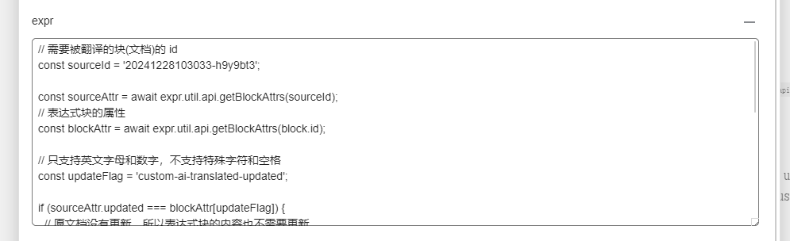

Sometimes, I have a need to translate articles into English for sharing on the English internet. Therefore, now I can use the aichat plugin to have AI help me translate documents, then use the expr plugin to automatically update English notes, and finally share my notes using OceanPress. A smooth combo is completed in one go.
Implementation Method
1.
Install the latest version of the expr plugin
2.
Install the latest version of the aichat plugin
Add the expr attribute to the block where the translated text needs to be output (hold down the shift key and click the block marker to open the custom attribute panel).

The expression is as follows, and you need to modify the sourceId to the id of the original document (right-click the corresponding document > copy > id)
js
// The id of the block (document) to be translated
const sourceId = '20250306213356-ekvz9w9';
const sourceAttr = await expr.util.api.getBlockAttrs(sourceId);
// Attributes of the expression block
const blockAttr = await expr.util.api.getBlockAttrs(block.id);
// Only supports letters and numbers, does not support special characters and spaces
const updateFlag = 'custom-ai-translated-updated';
if (sourceAttr.updated === blockAttr[updateFlag]) {
// The original document has not been updated, so the content of the expression block does not need to be updated
return expr.flag.noOutput;
} else {
const res = await expr.util.api.getBlockKramdown(sourceId);
const kramdown = res ? res.kramdown : res;
if (!kramdown) {
return expr.flag.noOutput;
}
block.Attr={ [updateFlag]: sourceAttr.updated }
return (
'{{{row\n' +
(await aiChatPlugin.openaiAPI.aiTranslateToEnglish({ openai: aiChatPlugin.openaiAPI.openai }, kramdown))
.res +
'\n}}}'
);
}
After the translation, if you update the original text, the corresponding translated expression will automatically synchronize updates at specific times.
The expression block being executed will have a blinking blue border.